GESTÃO ESG DE FORNECEDORES
Automação Total para Brasil Terminais Portuários
SCROLL PARA CONTINUAR ↓

Fato: 65-95% das emissões de carbono (Scope 3) estão na cadeia de fornecedores.
Antes: Preencher formulário manualmente por 5-10 minutos
Agora:
Resultado: 95% mais rápido | Zero erros
Antes: Ler PDF, digitar dados, arquivar, criar alertas manualmente
Agora:
Resultado: De 15 minutos → 15 segundos | 98,3% economia de tempo
Antes: Impossível medir desempenho ESG dos fornecedores
Agora:
Resultado: Decisões baseadas em dados | Priorização estratégica
Antes: Planilhas desatualizadas, sem visão consolidada
Agora:
Resultado: Visibilidade instantânea | Ação proativa
| O Que | Antes | Depois | Economia |
|---|---|---|---|
| Cadastrar fornecedor | 15 min | 30 seg | 95,0% |
| Processar certificado | 20 min | 15 seg | 98,3% |
| Analisar compliance | Horas/semana | Instantâneo | 100% |
Compliance Garantido
Mitigação de Multas
Vantagem Competitiva
Priorização Inteligente
Relatórios Instantâneos
| Atividade | Tempo Mensal |
|---|---|
| Cadastrar 50 fornecedores (20 min cada) | 16,7 horas |
| Processar 100 certificados (15 min cada) | 25 horas |
| Consultar vencimentos e status | 8 horas |
| Gerar relatórios para gerência/auditoria | 4 horas |
| Responder perguntas sobre compliance | 4 horas |
TOTAL: ~80 horas/mês de trabalho manual repetitivo
(Equivale a 25% da capacidade de 1 funcionário ou 1,4 semanas inteiras de trabalho)
Dia 1-3: Desenvolvimento MVP
Dia 4: Demonstração ao Vivo
Dia 5-6: Ajustes e Treinamento
Dia 7: Go-Live
Janela de Oportunidade
2025 = Ano da regulação ESG global
Validação Rápida
3 dias para provar o valor
Diferencial Competitivo
Primeiro terminal com gestão ESG automatizada
Economia Imediata
55 horas/mês liberadas (660 horas/ano)
Traga 2-3 certificados reais (PDF) e nós demonstramos:
Tempo de demo: 15-20 minutos
Impacto: Você verá a economia acontecendo ao vivo
Próximo Passo:
Agendar demonstração ao vivo (15-20 minutos)
Mauricio Denari
mauricio.denari@hyperize.com.br
13 98128-3300
Brasil Terminais Portuários + Automação IA
= Compliance ESG Sem Esforço
Transforme 20-30 minutos em 10 segundos
Reduza riscos. Aumente eficiência. Tome decisões inteligentes.